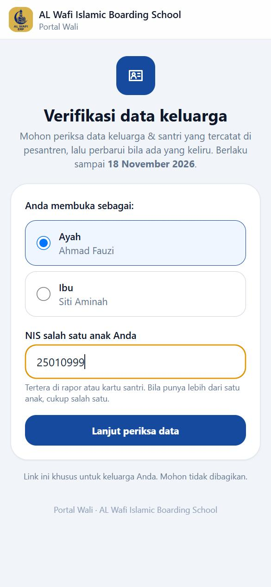
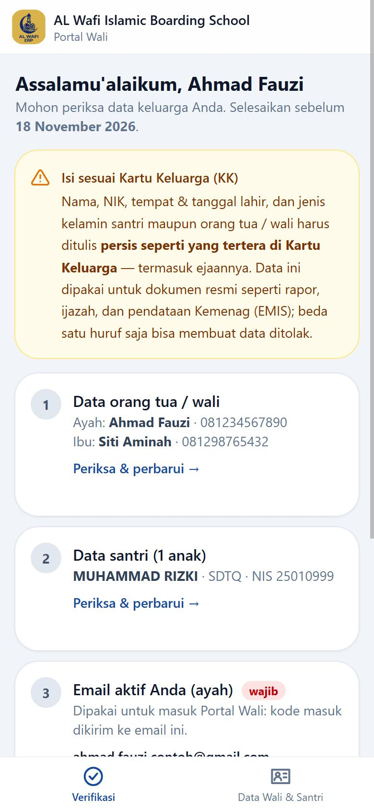
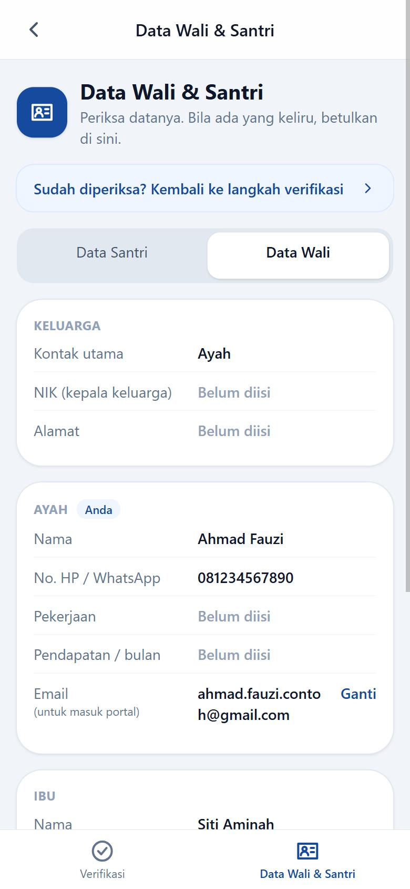
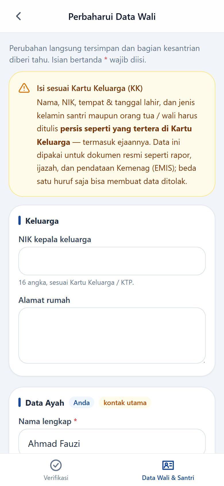
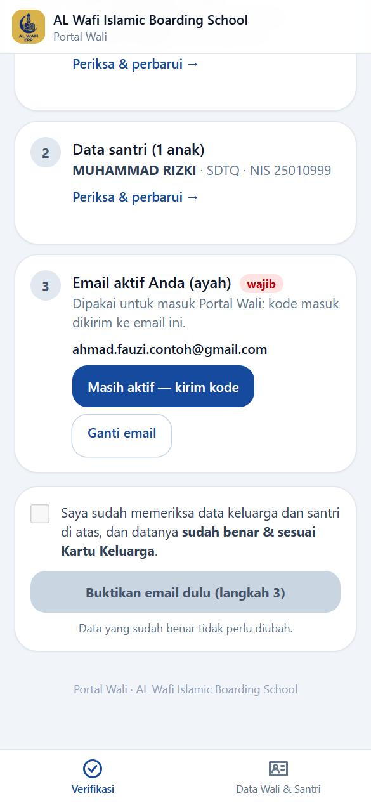
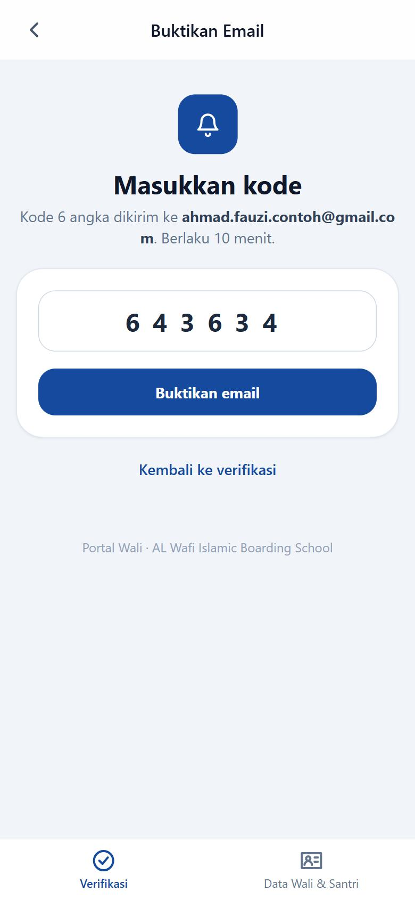
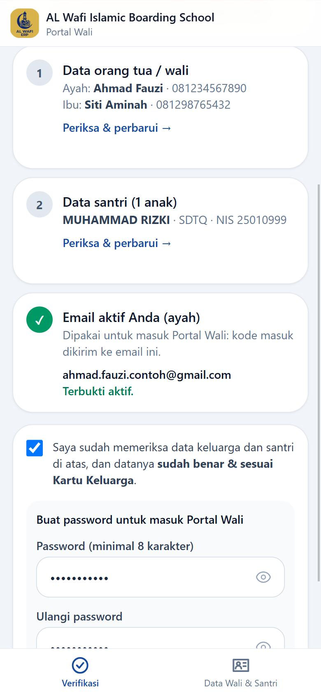
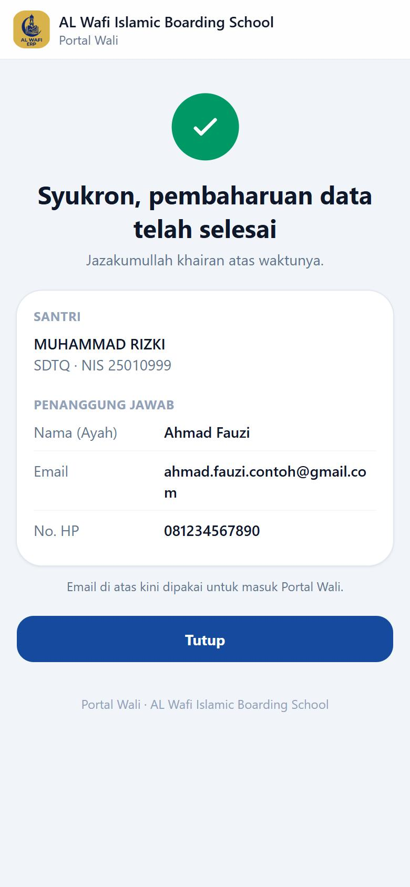
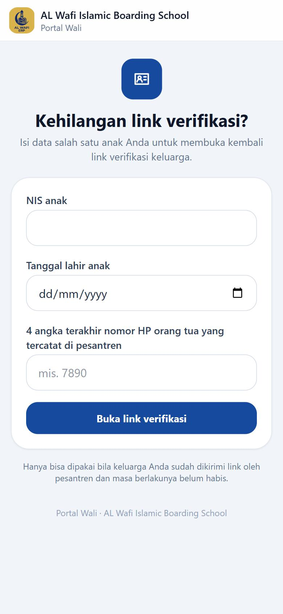

NIS ada di rapor atau kartu santri. Bila salah ketik berkali-kali, kesempatan dibatasi sementara — tunggu sekitar 1 jam lalu coba lagi.

Muncul sapaan "Assalamu'alaikum" dengan nama Anda, beserta tiga bagian yang perlu dicek:
Perhatikan kotak kuning: semua nama, NIK, tempat & tanggal lahir harus sama persis dengan Kartu Keluarga, termasuk ejaannya. Data ini dipakai untuk rapor, ijazah, dan pendataan Kemenag.

Semua sudah benar? Ketuk Sudah diperiksa? Kembali ke langkah verifikasi.

Perubahan langsung tersimpan dan bagian kesantrian otomatis diberi tahu. Data yang sudah benar tidak perlu diubah.

Kembali di halaman ringkasan, lihat bagian 3 — Email aktif Anda.
Email ini nantinya dipakai untuk masuk Portal Wali, jadi pilih email yang benar-benar bisa Anda buka.

Kode berlaku 10 menit. Tidak ada di Kotak Masuk? Periksa folder Spam atau Promosi. Bila sudah lewat 10 menit, kembali dan minta kode baru.

Setelah email terbukti, bagian 3 bertanda centang hijau "Terbukti aktif".
Catat dan simpan password ini baik-baik. Jangan beritahukan kepada siapa pun, termasuk kepada petugas.

Muncul tanda centang hijau dan tulisan "Syukron, pembaharuan data telah selesai", berikut ringkasan nama santri, nama penanggung jawab, email, dan nomor HP.
Ketuk Tutup. Verifikasi keluarga Anda sudah tercatat di pesantren.
Mulai sekarang, Bapak/Ibu bisa masuk Portal Wali memakai email dan password yang baru dibuat.
Jazakumullah khairan atas waktunya.
| Masalah | Yang perlu dilakukan |
|---|---|
| Link tidak bisa dibuka / muncul pesan link kedaluwarsa | Masa berlaku link (30 hari) sudah habis, atau keluarga Anda sudah menyelesaikan verifikasi. Hubungi bagian kesantrian untuk dikirimi link baru. |
| NIS dianggap tidak cocok | Periksa kembali NIS di rapor atau kartu santri, dan pastikan Anda memilih peran yang benar (Ayah/Ibu/Wali). Setelah 5 kali salah, tunggu sekitar 1 jam sebelum mencoba lagi. |
| Kode tidak masuk ke email | Tunggu 1–2 menit, lalu periksa folder Spam / Promosi. Pastikan alamat email yang diketik benar. Bila tetap tidak ada, kembali ke halaman verifikasi dan kirim kode lagi. |
| Kode ditolak | Kode hanya berlaku 10 menit dan hanya kode terbaru yang berlaku. Minta kode baru lalu ketik ulang dengan teliti. |
| Email ditolak karena sudah tercatat di keluarga lain | Satu email hanya untuk satu keluarga. Gunakan email lain, atau hubungi bagian kesantrian bila menurut Anda itu keliru. |
| Tombol "Selesai" masih abu-abu | Email belum dibuktikan (langkah 5–6) atau kotak pernyataan belum dicentang. |
| Pesan WhatsApp berisi link terhapus / hilang | Gunakan jalur cadangan di halaman berikut. |

Bila pesan WhatsApp-nya terhapus, link bisa dibuka kembali tanpa menghubungi petugas:
Jalur ini hanya bisa dipakai bila keluarga Anda sudah pernah dikirimi link oleh pesantren dan masa berlakunya belum habis.